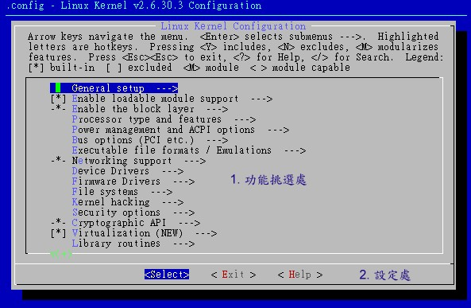

什么？核心编译还要进行前处理？没错啦！事实上，核心的目的在管理硬件与提供系统核心功能，因此你必须要先找到你的系统硬件，
并且规划你的主机未来的任务，这样才能够编译出适合你这部主机的核心！所以，整个核心编译的重要工作就是在『挑选你想要的功能』。
底下鸟哥就以自己的一部主机软/硬件环境来说明，解释一下如何处理核心编译罗！
不知道你有没有发现 /boot/ 底下存在一个名为 config-xxx 的文件？那个文件其实就是核心功能列表档！
我们底下要进行的动作，其实就是作出该文件！而我们后续小节所要进行的编译动作，其实也就是透过这个文件来处理的！
核心功能的挑选，最后会在 /usr/src/kernels/linux-2.6.30.3/ 底下产生一个名为 .config 的隐藏档，
这个文件就是 /boot/config-xxx 的文件啦！那么这个文件如何创建呢？你可以透过非常多的方法来创建这个文件！
常见的方法有：(注1)
- make menuconfig
最常使用的，是文字模式底下可以显示类似图形介面的方式，不需要启动 X Window 就能够挑选核心功能菜单！
- make oldconfig
透过使用已存在的 ./.config 文件内容，使用该文件内的配置值为默认值，只将新版本核心内的新功能选项列出让使用者选择，
可以简化核心功能的挑选过程！对於作为升级核心原始码后的功能挑选来说，是非常好用的一个项目！
- make xconfig
透过以 Qt 为图形介面基础功能的图形化介面显示，需要具有 X window 的支持。例如 KDE 就是透过 Qt 来设计的 X
Window，因此你如果在 KDE 画面中，可以使用此一项目。
- make gconfig
透过以 Gtk 为图形介面基础功能的图形化介面显示，需要具有 X window 的支持。例如 GNOME 就是透过 Gtk 来设计的 X
Window，因此你如果在 GNOME 画面中，可以使用此一项目。
- make config
最旧式的功能挑选方法，每个项目都以条列式一条一条的列出让你选择，如果配置错误只能够再次选择，很不人性化啊！
大致的功能选择有上述的方法，不过鸟哥个人比较偏好 make menuconfig 这个项目啦！如果你喜欢使用图形介面，
然后使用鼠标去挑选所需要的功能时，也能使用 make xconfig 或 make gconfig ，不过需要有相关的图形介面支持！
如果你是升级核心原始码并且需要重新编译，那么使用 make oldconfig 会比较适当！好了，那么如何选择呢？
以 make menuconfig 来说，出现的画面会有点像这样：

图 2.3.1 、 make menuconfig 核心功能挑选菜单示意图
看到上面的图示之后，你会发现画面主要分为两大部分，一个是大框框内的反白光柱，另一个则是底下的小框框，
里面有 select, exit 与 help 三个选项的内容。这几个组件的大致用法如下：
- 『左右方向键』：可以移动最底下的 <Select>, <Exit>, <Help>项目；
- 『上下方向键』：可以移动上面大框框部分的反白光柱，若该行有箭头 (--->)
则表示该行内部还有其他细项需要来配置的意思；
- 选定项目：以『上下键』选择好想要配置的项目之后，并以『左右键』选择 <Select> 之后，
按下『 Enter 』就可以进入该项目去作更进一步的细部配置罗；
- 可挑选之功能：在细部项目的配置当中，如果前面有 [ ] 或 < > 符号时，该项目才可以选择，
而选择可以使用『空白键』来选择；
- 若为 [*] <*> 则表示编译进核心；若为 <M> 则表示编译成模块！
尽量在不知道该项目为何时，且有模块可以选，那么就可以直接选择为模块罗！
- 当在细项目选择 <Exit> 后，并按下 Enter ，那么就可以离开该细部项目罗！
基本上建议只要『上下左右的方向键、空白键、Enter』这六个按键就好了！不要使用 Esc
，否则一不小心就有可能按错的！另外，关於整个核心功能的选择上面，建议你可以这样思考：
- 『肯定』核心一定要的功能，直接编译进核心内；
- 『可能在未来会用到』的功能，那么尽量编译成为模块；
- 『不知道那个东西要干嘛的，看 help 也看不懂』的话，那么就保留默认值，或者将他编译成为模块；
总之，尽量保持核心小而美，剩下的功能就编译成为模块，尤其是『需要考虑到未来扩充性』，
像鸟哥之前认为螃蟹卡就够我用的了，结果，后来竟然网站流量大增，鸟哥只好改换 3Com 的网络卡。
不过，我的核心却没有相关的模块可以使用～因为.....鸟哥自己编译的核心忘记加入这个模块了。
最后，只好重新编译一次核心的模块，呵呵！真是惨痛的教训啊！
由上面的图示当中，我们知道核心的可以选择的项目有很多啊！光是第一面，就有 16
个项目，每个项目内还有不同的细项！哇！真是很麻烦啊～每个项目其实都可能有 <Help>
的说明，所以，如果看到不懂的项目，务必要使用 Help 查阅查阅！
好了，底下我们就一个一个项目来看看如何选择吧！
与 Linux 最相关的程序互动、核心版本说明、是否使用发展中程序码等资讯都在这里配置的。
这里的项目主要都是针对核心与程序之间的相关性来设计的，基本上，保留默认值即可！
不要随便取消底下的任何一个项目，因为可能会造成某些程序无法被同时运行的困境喔！
不过底下有非常多新的功能，如果你有不清楚的地方，可以按 <Help>
进入查阅，里面会有一些建议！ 你可以依据 Help 的建议来选择新功能的启动与否！
[ ] Prompt for development and/or incomplete code/drivers
# 这个建议不要选择，因为我们不是核心专家，不需要使用发展中或不完整的程序码！
(vbird) Local version - append to kernel release
[*] Automatically append version information to the version string
# 我希望我的核心版本成为 2.6.30.3.vbird ，那这里可以就这样配置！
Kernel compression mode (Bzip2) --->
# 建议选择成为 Bzip2 即可，因为压缩比较佳！
[*] Support for paging of anonymous memory (swap)
# 任何人均可存取 swap 是合理的！所以这里务必要勾选！
[*] System V IPC
# IPC 是 Inter Process Communication (程序通讯) 缩写，与程序沟通有关，要选！
[*] BSD Process Accounting
[ ] BSD Process Accounting version 3 file format
# 与标准 Unix (BSD) 的程序支持有关，但不要支持 version 3 ，可能有兼容性问题
[ ] Export task/process statistics through netlink (EXPERIMENTAL)
# 这个额外的进阶选项可以将他取消的！
[*] Auditing support
[*] Enable system-call auditing support
# 上面这两个是额外核心功能 (如 SELinux) 加载时所需要的配置！务必选择
RCU Subsystem --->
RCU Implementation (Classic RCU) --->
# 选择标准 RCU 即可，不需要使用大量 CPU 的整合功能。
<M> Kernel .config support
[ ] Enable access to .config through /proc/config.gz (NEW)
# 让 .config 这个核心功能列表可以写入实际的核心文件中！
(17) Kernel log buffer size (16 => 64KB, 17 => 128KB)
[ ] Control Group support (NEW) --->
# 整合 CPU 或分离装置的功能，属於进阶配置，我们先不要使用这功能。
[*] Create deprecated sysfs layout for older userspace tools (NEW)
# 如果使用支持旧式装置，如 /sys/devices 者，这里要勾选！但如果是 2008
# 年后的 distribution ，这里可能需要取消喔！ CentOS 5.x 要选的！
-*- Kernel->user space relay support (formerly relayfs)
-*- Namespaces support
[*] UTS namespace (NEW)
[*] IPC namespace (NEW)
# 使用 uname 时，会输出较多的资讯，所以可以尝试选择看看。
[*] Initial RAM filesystem and RAM disk (initramfs/initrd) support
() Initramfs source file(s)
# 这是一定要的！因为要支持启动时加载 initail RAM disk 嘛！
[*] Optimize for size
# 可以减低核心的文件大小，其实是 gcc 参数使用 -Os 而不是 -O2
[ ] Configure standard kernel features (for small systems) --->
# 给嵌入式系统使用的，我们用 PC ，所以这里不选。
[ ] Strip assembler-generated symbols during link (NEW)
[ ] Disable heap randomization (NEW)
# 2000 年后推出的版本，可以取消这个项目！
Choose SLAB allocator (SLAB) --->
[*] Profiling support (EXPERIMENTAL)
[ ] Activate markers (NEW)
<M> OProfile system profiling (EXPERIMENTAL)
[ ] OProfile AMD IBS support (EXPERIMENTAL) (NEW)
[*] Kprobes
|
- loadable module + block layer
要让你的核心能够支持动态的核心模块，那么底下的第一个配置就得要启动才行！至於第二个 block layer 则默认是启动的，
你也可以进入该项目的细项配置，选择其中你认为需要的功能即可！
[*] Enable loadable module support ---> <==底下为细项
--- Enable loadable module support
[ ] Forced module loading <==大概就是这个不要选，其他的都选起来！
[*] Module unloading
[*] Module versioning support
[*] Source checksum for all module
================================================================================
-*- Enable the block layer ---> <==看吧！默认就是已经选择了！底下为细项
[ ] Block layer data integrity support <==特殊储存装置支持，可以不选
IO Schedulers --->
<*> Anticipatory I/O scheduler <==较复杂的一种I/O排程
<*> Deadline I/O scheduler <==较适用於 database 的加载
<*> CFQ I/O scheduler <==较适用於 desktop 的环境
Default I/O scheduler (Deadline) ---> <==适用於鸟哥环境
|
进入『Processor type and features』后，请挑选你主机的实际 CPU 形式。鸟哥这里使用的是 Athlon 64 的 CPU，
而且鸟哥的主机还有启动 Xen 这个虚拟化的服务 (在一部主机上面同时启动多个操作系统)，因此，所以底下的选择是这样的：
[*] Tickless System (Dynamic Ticks) <==可添加些许省电功能
[ ] High Resolution Timer Support
[*] Symmetric multi-processing support <==多核心 CPU 环境必选
[ ] Support sparse irq numbering
[*] Enable MPS table <==让多 CPU 支持 ACPI
[ ] Support for extended (non-PC) x86 platforms
[*] Single-depth WCHAN output
[*] Paravirtualized guest support ---> <==支持半虚拟化功能
--- Paravirtualized guest support <==底下为 Xen 与 KVM 两种虚拟机器支持！
[*] Xen guest support
(32) Maximum allowed size of a domain in gigabytes
[*] Enable Xen debug and tuning parameters in debugfs
[*] KVM paravirtualized clock
[*] KVM Guest support
-*- Enable paravirtualization code
================================================================================
[ ] paravirt-ops debugging (NEW) <==不需要具有 debug 的功能
[ ] Memtest
Processor family (Opteron/Athlon64/Hammer/K8) ---> <==要选对啊！
[*] AMD IOMMU support <==启动 AMD 的 IOMMU 功能！
(8) Maximum number of CPUs
[ ] SMT (Hyperthreading) scheduler support <==Intel CPU 的超运行绪功能
[*] Multi-core scheduler support <==多核心功能的支持
Preemption Model (No Forced Preemption (Server)) --->
# 这是与程序有关的配置项目，鸟哥这里创建 Server 主机，因此选这项！
# 如果是桌上型计算机的使用，建议进入选择 desktop 项目。
[ ] Reroute for broken boot IRQs
[*] Machine Check Exception <==可将核心侦测之错误回报到终端机显示！
[*] Intel MCE features (NEW)
[*] AMD MCE features (NEW)
< > Dell laptop support
<M> /dev/cpu/microcode - microcode support
[ ] Intel microcode patch loading support
[*] AMD microcode patch loading support
<M> /dev/cpu/*/msr - Model-specific register support
<*> /dev/cpu/*/cpuid - CPU information support
< > /sys/kernel/debug/x86/cpu/* - CPU Debug support
[ ] Numa Memory Allocation and Scheduler Support
Memory model (Sparse Memory) --->
[*] Sparse Memory virtual memmap <==可强化些许核心效能
[ ] Allow for memory hot-add
[*] Add LRU list to track non-evictable pages
(65536) Low address space to protect from user allocation
[ ] Check for low memory corruption
[*] Reserve low 64K of RAM on AMI/Phoenix BIOSen <==重新侦测 BIOS 资讯
[*] MTRR (Memory Type Range Register) support
# 可以让 CPU 具有读取内存特殊区块的能力，尤其在高效能的显卡方面，
# 可以增进不少效能。这个项目会产生 /proc/mtrr ，X 会读取这个咚咚喔。
[*] MTRR cleanup support
(0) MTRR cleanup enable value (0-1)
(1) MTRR cleanup spare reg num (0-7)
[ ] x86 PAT support
[ ] EFI runtime service support
[*] Enable seccomp to safely compute untrusted bytecode
Timer frequency (300 HZ) --->
# 这个项目则与核心针对某个事件立即回应的速度有关。Server 用途可以调整到
# 300Hz 即可，如果是桌上型计算机使用，需要调整高一点，例如 1000Hz 较佳！
[*] kexec system call
[ ] kernel crash dumps
-*- Support for hot-pluggable CPUs
[ ] Compat VDSO support <==旧式功能，可以不要选择
[ ] Built-in kernel command line <==正常启动菜单 (grub) 环境，不需要此项功能
|
如果选择了『Power management and ACPI options』之后，就会进入系统的电源管理机制中。
其实电源管理机制还需要搭配主板以及 CPU 的相关省电功能，才能够实际达到省电的效率啦！
不论是 Server 还是 Desktop 的使用，在目前电力不足的情况下，能省电就加以省电吧！
[*] Power Management support
[ ] Power Management Debug Support
[*] Suspend to RAM and standby
[ ] Hibernation (aka 'suspend to disk')
[*] ACPI (Advanced Configuration and Power Interface) Support --->
# 这是个较新的电源管理模块，由於选择后会添加核心约 70K ，所以
# 对嵌入式系统来说，可能需要考虑考虑。至於 desktop/server 当然就选择啊
--- ACPI (Advanced Configuration and Power Interface) Support
[ ] Deprecated /proc/acpi files
[*] Deprecated power /proc/acpi directories
[*] Future power /sys interface
[*] Deprecated /proc/acpi/event support
<M> AC Adapter
<M> Battery
<M> Button
-M- Video
<*> Fan
<*> Processor
<*> Thermal Zone
[ ] Debug Statements
<M> PCI slot detection driver
<M> Smart Battery System
================================================================================
CPU Frequency scaling --->
# 可以经过核心修改 CPU 的运行频率，在说明档当中也提及，还需要启动底下的
# dynamic cpufreq governor 才可以顺利的启动这个项目。
[*] CPU Frequency scaling
[*] Enable CPUfreq debugging
<M> CPU frequency translation statistics
[*] CPU frequency translation statistics details
Default CPUFreq governor (userspace) --->
-*- 'performance' governor
<M> 'powersave' governor
<M> 'userspace' governor for userspace frequency scaling
<M> 'ondemand' cpufreq policy governor
-*- 'conservative' cpufreq governor
*** CPUFreq processor drivers ***
<M> ACPI Processor P-States driver
<*> AMD Opteron/Athlon64 PowerNow! <==因为我们是 AMD 的 CPU 啊！
<M> Intel Enhanced SpeedStep (deprecated)
< > Intel Pentium 4 clock modulation
================================================================================
-*- CPU idle PM support
Memory power savings --->
|
这个项目则与汇流排有关啦！分为最常见的 PCI 与 PCI-express 的支持，还有笔记本计算机常见的 PCMCIA
插卡啊！要记住的是，那个 PCI-E 的介面务必要选取！不然你的新显卡可能会捉不到！
[*] PCI support
[*] Support mmconfig PCI config space access
[*] PCI Express support
<M> PCI Express Hotplug driver
[*] Root Port Advanced Error Reporting support
-*- Message Signaled Interrupts (MSI and MSI-X)
[*] Enable deprecated pci_find_* API
[ ] PCI Debugging
<M> PCI Stub driver
[*] Interrupts on hypertransport devices
[*] PCI IOV support <==与虚拟化有关！请加选此项！
< > PCCard (PCMCIA/CardBus) support ---> <==鸟哥的主机不是 notebook，所以不选。
<*> Support for PCI Hotplug ---> <==不关机情况下，热拔插 PCI 装置
--- Support for PCI Hotplug
<M> Fake PCI Hotplug driver
<M> ACPI PCI Hotplug driver
<M> ACPI PCI Hotplug driver IBM extensions
[ ] CompactPCI Hotplug driver
<M> SHPC PCI Hotplug driver
|
选择『Executable file formats / Emulations』会见到如下选项。
底下的选项必须要勾选才行喔！因为是给 Linux 核心运行运行档之用的数据。通常是与编译行为有关啦！
[*] Kernel support for ELF binaries
[ ] Write ELF core dumps with partial segments
<*> Kernel support for MISC binaries
[*] IA32 Emulation <==因为我们这里是 64 位，因此 32 位为模拟结果
<M> IA32 a.out support
|
这个『Networking support』项目是相当重要的选项，因为他还包含了防火墙相关的项目！就是未来在服务器篇会谈到的防火墙
iptables 这个数据啊！所以，千万注意了！在这个配置项目当中，很多东西其实我们在基础篇还没有讲到，
因为大部分的参数都与网络、防火墙有关！由於防火墙是在启动网络之后再配置即可，所以绝大部分的内容都可以被编译成为模块，而且也建议你编成模块！有用到再加载到核心即可啊！
--- Networking support
Networking options --->
# 就是这个光啊！里面的数据全部都是重要的防火墙项目！尽量编成模块罗！
# 至於不晓得功能的部分，就尽量保留默认值即可！
<*> Packet socket <==网络封包，当然要选择啊！
[*] Packet socket: mmapped IO
<*> Unix domain sockets <==Unix 插槽档，也一定要选择啊！
<*> Transformation user configuration interface
<M> PF_KEY sockets
[*] TCP/IP networking <==能不选择 TCP/IP 吗？
[*] IP: multicasting
[*] IP: advanced router
Choose IP: FIB lookup algorithm (FIB_HASH) --->
[*] IP: policy routing
[*] IP: equal cost multipath
[*] IP: verbose route monitoring
[ ] IP: kernel level autoconfiguration
<M> IP: tunneling
<M> IP: GRE tunnels over IP
[*] IP: broadcast GRE over IP
[*] IP: multicast routing
[*] IP: PIM-SM version 1 support
[*] IP: PIM-SM version 2 support
[*] IP: TCP syncookie support (disabled per default)
<M> IP: AH transformation
<M> IP: ESP transformation
<M> IP: IPComp transformation
<M> IP: IPsec transport mode
<M> IP: IPsec tunnel mode
<*> IP: IPsec BEET mode
-*- Large Receive Offload (ipv4/tcp)
<M> INET: socket monitoring interface
[*] TCP: advanced congestion control ---> <==内部细项全为模块
<M> The IPv6 protocol ---> <==除必选外，内部细项全为模块
[*] NetLabel subsystem support
-*- Security Marking
[*] Network packet filtering framework (Netfilter) --->
# 这个就是我们一直讲的防火墙部分！里面细项几乎全选择成为模块！
--- Network packet filtering framework (Netfilter)
[ ] Network packet filtering debugging <==debug 部分不选！
[*] Advanced netfilter configuration
[*] Bridged IP/ARP packets filtering
Core Netfilter Configuration --->
<M> IP virtual server support --->
IP: Netfilter Configuration --->
IPv6: Netfilter Configuration --->
<M> Ethernet Bridge tables (ebtables) support --->
# 上面的细项，除了必选外其他的都编成模块喔！原始没选的也请选为模块
================================================================================
<M> Asynchronous Transfer Mode (ATM)
<M> Classical IP over ATM
[ ] Do NOT send ICMP if no neighbour
<M> LAN Emulation (LANE) support
< > Multi-Protocol Over ATM (MPOA) support
<M> RFC1483/2684 Bridged protocols
[ ] Per-VC IP filter kludge
<M> 802.1d Ethernet Bridging
<M> 802.1Q VLAN Support
[ ] GVRP (GARP VLAN Registration Protocol) support
<M> DECnet Support
<M> ANSI/IEEE 802.2 LLC type 2 Support
[ ] IPX: Full internal IPX network (NEW)
<M> Appletalk protocol support
< > Appletalk interfaces support
<M> Phonet protocols family
[*] QoS and/or fair queueing ---> <==内容同样全为模块！
[ ] Data Center Bridging support
Network testing ---> <==保留成模块默认值
================================================================================
# 底下的则是一些特殊的网络设备，例如红外线啊、蓝芽啊！
# 如果不清楚的话，就使用模块吧！除非你真的知道不要该项目！
[ ] Amateur Radio support --->
< > CAN bus subsystem support --->
< > IrDA (infrared) subsystem support --->
<M> Bluetooth subsystem support --->
# 这个是蓝芽支持，同样的，里面除了必选之外，其他通通挑选成为模块！
[*] Wireless --->
# 这个则是无线网络设备，里面保留默认值，但可编成模块的就选模块
<M> WiMAX Wireless Broadband support --->
# 新一代的无线网络，也请勾选成为模块！
{M} RF switch subsystem support --->
|
进入『Device Drivers』这个是所有硬件装置的驱动程序库！哇！光是看到里面这么多内容，鸟哥头都昏了～
不过，为了你自己的主机好，建议你还是得要一个项目一个项目的去挑选挑选才行～
这里面的数据就与你主机的硬件有绝对的关系了！
在这里面真的很重要，因为很多数据都与你的硬件有关。核心推出时的默认值是比较符合一般状态的，
所以很多数据其实保留默认值就可以编的很不错了！不过，也因为较符合一般状态，
所以核心额外的编译进来很多跟你的主机系统不符合的数据，例如网络卡装置～
你可以针对你的主板与相关硬件来进行编译。不过，还是要记得有『未来扩充性』的考量！
之前鸟哥不是谈过吗，我的网络卡由螃蟹卡换成 3Com 时，核心捉不到～
因为...鸟哥并没有将 3Com 的网络卡编译成为模块啊！ @_@
Generic Driver Options ---> <==与韧体有关，保留默认值即可
<*> Connector - unified userspace <-> kernelspace linker --->
# 与使用者/核心层级的资讯沟通有关，务必要选择啊！
<M> Memory Technology Device (MTD) support --->
# 例如闪存(拇指碟之类)之支持，通常与嵌入式系统有关！
# 但由於我们也会用到闪盘，所以里面的数据全编为模块！
<M> Parallel port support --->
# 平行序列埠的支持，例如早期的 25 针打印机与 9 针鼠标等，细项全编为模块！
-*- Plug and Play support ---> <==不罗唆！当然要选择这个项目！
[*] Block devices ---> <==区块装置，就是一些储存媒体！细项内容请全编为模块
[*] Misc devices ---> <==一些较冷门的设备，建议还是全部编为模块！
<*> ATA/ATAPI/MFM/RLL support ---> <==IDE 介面相关的芯片组！
# 这个其实与主板的南桥芯片有关！由於鸟哥的主机为 ALi 的板子，所以：
<*> ALI M15x3 chipset support
# 除了可以保留默认值之外，你也可以将没用到的驱动程序取消选择。较重要的还有：
[ ] Support for SATA (deprecated; conflicts with libata SATA driver)
# 这个一定不能选！因为 SATA 的模块是在 SCSI 中！
<*> Include IDE/ATAPI CDROM support
# IDE 的 CDROM 最好直接编译进核心！
# 其余的驱动程序鸟哥几乎都选择成为模块了！没用到的芯片也将 * 也改成 M 哩！
================================================================================
SCSI device support --->
# 这部份是 SCSI 储存媒体的驱动程序！请一定要选择！因为：
# 1. 因为 U盘 装置用的就是模拟 SCSI 啊！
# 2. 因为 SATA 的配置项目就在这里面！
<M> RAID Transport Class
{M} SCSI device support
[*] legacy /proc/scsi/ support
*** SCSI support type (disk, tape, CD-ROM) ***
<M> SCSI disk support <==几乎全编为模块即可！
<M> SCSI tape support
<M> SCSI OnStream SC-x0 tape support
<M> SCSI CDROM support
[*] Enable vendor-specific extensions (for SCSI CDROM)
<M> SCSI generic support
<M> SCSI media changer support
<M> SCSI Enclosure Support
*** Some SCSI devices (e.g. CD jukebox) support multiple LUNs ***
[*] Probe all LUNs on each SCSI device
[*] Verbose SCSI error reporting (kernel size +=12K)
[*] SCSI logging facility
[*] Asynchronous SCSI scanning
SCSI Transports ---> <==细项保留默认值
[*] SCSI low-level drivers ---> <==主要是磁盘阵列卡，细项可全选为模块
<M> SCSI Device Handlers ---> <==细项全选为模块
< > OSD-Initiator library
================================================================================
<M> Serial ATA (prod) and Parallel ATA (experimental) drivers --->
# SATA 之类的磁碟驱动程序！这里的模块与 SCSI 模块是有相依属性的关系！
# 底下的细项全部选择模块，尤其是 ALi 的这个项目，对鸟哥来说，是一定要勾选的
<M> ALi PATA support
[*] Multiple devices driver support (RAID and LVM) --->
# RAID 与 LVM 怎可不选！我们第十五章才讲过这东西！细项均保留默认值即可
[ ] Fusion MPT device support --->
# 一种高阶的 SCSI 控制器，可选可不选！因为鸟哥这里不会用到，所以不选！
IEEE 1394 (FireWire) support --->
# 这个就是俗称的『火线』，许多外接式设备可能会用这个介面，因此，
# 在此部分内的细项部分，请务必配置为模块喔！不要忘了！
<M> I2O device support ---> <==细项亦全选为模块！
[ ] Macintosh device drivers ---> <==我们是 PC ，所以不需支持麦金塔周边
[*] Network device support ---> <==网络设备的支持是必选！
--- Network device support
[*] Enable older network device API compatibility
<M> Intermediate Functional Block support
<M> Dummy net driver support
<M> Bonding driver support
<M> EQL (serial line load balancing) support
<M> Universal TUN/TAP device driver support
<M> Virtual ethernet pair device
<M> General Instruments Surfboard 1000
< > ARCnet support ---> <==较早期的网卡规格，可不选择！
{M} PHY Device support and infrastructure ---> <==细项全为模块
[*] Ethernet (10 or 100Mbit) --->
[*] Ethernet (1000 Mbit) --->
[*] Ethernet (10000 Mbit) --->
# 上面三个以太网络网卡支持，不论是否用的到，细项请全编为模块来待命吧！
< > Token Ring driver support ---> <==IBM 的 LAN ，可不选！
Wireless LAN --->
WiMAX Wireless Broadband devices --->
U盘 Network Adapters --->
# 上面三个为现阶段很热门的无线网络设备，所以全部内容的细项全选择
# 为模块！免得未来你的主机加上新的无线设备时会找不到驱动程序！
[ ] Wan interfaces support ---> <==WAN 的广域网络设备应该就不用选择了！
[ ] ATM drivers ---> <==高阶的 ATM 设备也不用选吧！
<*> Xen network device frontend driver
<*> FDDI driver support
<M> Digital DEFTA/DEFEA/DEFPA adapter support
[ ] Use MMIO instead of PIO (NEW)
<M> SysKonnect FDDI PCI support
<M> PLIP (parallel port) support
<M> PPP (point-to-point protocol) support
[*] PPP filtering
<M> PPP support for async serial ports
<M> PPP support for sync tty ports
<M> PPP Deflate compression
<M> PPP BSD-Compress compression
<M> PPP over ATM
# 如果你有 ADSL 拨接的话，呵呵！PPP 的装置也要选择上喔！
<M> SLIP (serial line) support
[*] CSLIP compressed headers
[*] Keepalive and linefill
[ ] Six bit SLIP encapsulation
[*] Fibre Channel driver support
================================================================================
[ ] ISDN support --->
< > Telephony support --->
# 这两个设备没用到，所以也可以不要选择！
Input device support --->
# 这里面含有鼠标、键盘、摇杆、触控版等输入装置，尽量全选为模块吧！
Character devices --->
# 周边组件设备部分，也全选为模块吧！
{M} I2C support --->
# 还记得我们去侦测主板的温度与压力吧？呵呵！那就是透过核心的这个 I2C
# 的模块功能！ALi 默认没有被编入核心，所以请进入选择成模块！
[ ] SPI support --->
[ ] GPIO Support --->
< > Dallas's 1-wire support --->
-*- Power supply class support --->
# 绝大部分都没有用到的咚咚，所以保留默认值，不选择！
<M> Hardware Monitoring support --->
# 硬件侦测器的支持，记得也要挑选，然后内容全为模块！
-*- Generic Thermal sysfs driver --->
[*] Watchdog Timer Support ---> <==需搭配 watchdog 服务
# 若搭配 watchdog 服务，可以配置在某些特定状况下重新启动主机！
Sonics Silicon Backplane --->
Multifunction device drivers --->
# 鸟哥没有这样的设备，所以也没有选择！
[ ] Voltage and Current Regulator Support --->
Multimedia devices --->
# 一堆多媒体装置如影像撷取卡、FM 广播声卡。但如果你的 Linux 是桌上型计算机，
# 里面需要挑选成模块较佳！因为一大堆多媒体介面卡！
Graphics support ---> <==这就重要了！显卡选择！
# 嘿嘿！重点之一，显卡的芯片组～刚刚前面提到的都是主板的对显卡的
# 汇流排支持 (PCI-E 与 AGP) ，这里则是针对显卡芯片！鸟哥的显卡是 NVidia
# 的，所以将他选择即可！其他的可以编成模块！
<M> Sound card support --->
# 声卡部分，也全部选择成为模块啦！反正编成模块又不用钱～
[*] HID Devices ---> <==人机介面装置，保留默认值即可(也可不选)
[*] U盘 support --->
# 不能不选的 U盘 ，内容也全部是模块即可！尤其底下这三个：
<M> EHCI HCD (U盘 2.0) support
<M> OHCI HCD support
<M> UHCI HCD (most Intel and VIA) support
<M> MMC/SD/SDIO card support ---> <==多媒体介面卡，保留默认值
< > Sony MemoryStick card support (EXPERIMENTAL) --->
-*- LED Support --->
[ ] Accessibility support --->
<M> InfiniBand support ---> <==高阶网络设备
[*] EDAC - error detection and reporting --->
<M> Real Time Clock ---> <==内容选为模块吧！
[ ] DMA Engine support --->
[ ] Auxiliary Display support --->
< > Userspace I/O drivers --->
[*] Xen memory balloon driver
[*] Scrub pages before returning them to system
<*> Xen filesystem
[*] Create compatibility mount point /proc/xen
[ ] Staging drivers --->
[ ] X86 Platform Specific Device Drivers --->
# 一堆笔记本计算机的驱动，可以不选啦！
|
底下则与 Firmware Drivers 有关喔！基本上，都保留默认值就好了！
<M> BIOS Enhanced Disk Drive calls determine boot disk
[ ] Sets default behavior for EDD detection to off (NEW)
<M> BIOS update support for DELL systems via sysfs
<M> Dell Systems Management Base Driver
[*] Export DMI identification via sysfs to userspace
[*] iSCSI Boot Firmware Table Attributes
<M> iSCSI Boot Firmware Table Attributes module
|
文件系统的支持也是很重要的一项核心功能！因为如果不支持某个文件系统，那么我们的 Linux kernel
就无法认识，当然也就无法使用啦！例如 Quota, NTFS 等等特殊的 filesystem 。
这部份也是有够麻烦～因为涉及核心是否能够支持某些文件系统，以及某些操作系统支持的
partition table 项目。在进行选择时，也务必要特别的小心在意喔！
尤其是我们常常用到的网络操作系统 (NFS/Samba 等等)，以及基础篇谈到的 Quota 等，
你都得要勾选啊！否则是无法被支持的。比较有趣的是 NTFS 在这一版的核心里面竟然有支持可写入的项目，
著实让鸟哥吓了一跳了！^_^
<*> Second extended fs support
[*] Ext2 extended attributes
[*] Ext2 POSIX Access Control Lists
[*] Ext2 Security Labels
[*] Ext2 execute in place support
<*> Ext3 journalling file system support <==建议这里直接编进核心
[ ] Default to 'data=ordered' in ext3 (legacy option)
[*] Ext3 extended attributes
[*] Ext3 POSIX Access Control Lists
[*] Ext3 Security Labels
<M> The Extended 4 (ext4) filesystem
[*] Enable ext4dev compatibility
[*] Ext4 extended attributes (NEW)
[*] Ext4 POSIX Access Control Lists
[*] Ext4 Security Labels
# 上面是传统的 EXT2/EXT3 及进阶的 EXT4 支持！除了 EXT4 外，其他编入核心吧！
================================================================================
[ ] JBD (ext3) debugging support
[ ] JBD2 (ext4) debugging support (NEW)
<M> Reiserfs support
[ ] Enable reiserfs debug mode (NEW)
[ ] Stats in /proc/fs/reiserfs (NEW)
[ ] ReiserFS extended attributes (NEW)
< > JFS filesystem support
<M> XFS filesystem support
[*] XFS Quota support
[*] XFS POSIX ACL support
[*] XFS Realtime subvolume support
< > OCFS2 file system support
[*] Dnotify support
[*] Inotify file change notification support
[*] Inotify support for userspace
[*] Quota support
[ ] Report quota messages through netlink interface
[*] Print quota warnings to console (OBSOLETE)
< > Old quota format support
<*> Quota format v2 support
<M> Kernel automounter support
<M> Kernel automounter version 4 support (also supports v3)
< > FUSE (Filesystem in Userspace) support
# XFS 以及 Reiserfs 与 Quota 建议也是选择起来放啦！
================================================================================
Caches --->
CD-ROM/DVD Filesystems ---> <==CD内的文件格式，默认值即可
DOS/FAT/NT Filesystems ---> <==有支持 NTFS ，要进入挑挑！
<M> MSDOS fs support
<M> VFAT (Windows-95) fs support
(950) Default codepage for FAT <==支持繁体中文
(utf8) Default iocharset for FAT <==支持万国码
<M> NTFS file system support
[ ] NTFS debugging support (NEW)
[*] NTFS write support
================================================================================
Pseudo filesystems ---> <==类似 /proc ，保留默认值
[*] Miscellaneous filesystems ---> <==其他文件系统的支持，保留默认值
[*] Network File Systems ---> <==网络文件系统！很重要！也要挑挑！
--- Network File Systems
<M> NFS client support
[*] NFS client support for NFS version 3
[*] NFS client support for the NFSv3 ACL protocol extension
<M> NFS server support
[*] NFS server support for NFS version 3
[*] NFS server support for the NFSv3 ACL protocol extension
< > SMB file system support (OBSOLETE, please use CIFS)
<M> CIFS support (advanced network filesystem, SMBFS successor)
# 最重要就这几项，其他保留默认值即可！
================================================================================
Partition Types ---> <==分割类型，也是保持默认值即可！
-*- Native language support ---> <==选择默认的语系
--- Native language support
(utf8) Default NLS Option
<*> Traditional Chinese charset (utf-8)
# 除了上述这两个之外，其他的请选择成为模块即可！
|
再接下来有个『Kernel hacking』的项目，那是与核心开发者比较有关的部分，这部分建议保留默认值即可，
应该不需要去修改他！除非你想要进行核心方面的研究喔。然后底下有个『 Security Options 』，那是属於资讯安全方面的配置，
包括 SELinux 这个细部权限强化模块也在这里编入核心的！这部分可以作一些额外的配置。
另外还有『 Cryptographic API 』这个口令应用程序介面工具选项，也是可以保留默认值啦！
我们来看看有什么比较特殊的地方吧！
Security options --->
[*] Enable access key retention support
[*] Enable the /proc/keys file by which keys may be viewed
[*] Enable different security models
[ ] Enable the securityfs filesystem
[*] Socket and Networking Security Hooks
[*] XFRM (IPSec) Networking Security Hooks
[ ] Security hooks for pathname based access control
[ ] File POSIX Capabilities
[ ] Root Plug Support
[*] NSA SELinux Support
[*] NSA SELinux boot parameter
(1) NSA SELinux boot parameter default value
[*] NSA SELinux runtime disable
[*] NSA SELinux Development Support
[*] NSA SELinux AVC Statistics
(1) NSA SELinux checkreqprot default value
[ ] NSA SELinux maximum supported policy format version
[ ] Simplified Mandatory Access Control Kernel Support
[ ] TOMOYO Linux Support
[ ] Integrity Measurement Architecture(IMA)
# 基本上，这部分保留默认值就对了！你也会发现 NSA 的数据都是直接编进核心！
================================================================================
Cryptographic API --->
# 基本上，除了底下这两个编译进核心之外，其他的通通选择成为模块吧！
{*} MD5 digest algorithm
{*} SHA1 digest algorithm
|
在口令应用程序介面方面，一般我们使用的帐号口令登陆利用的就是 MD5
这个加密机制，要让核心有支持才行啊！几乎所有的项目都给他做成模块即可！
不过 MD5 与 SHA1 必须要直接由核心支持比较好！
虚拟化是近年来非常热门的一个议题，因为计算机的能力太强，所以时常闲置在那边，
此时，我们可以透过虚拟化技术在一部主机上面同时启动多个操作系统来运行，这就是所谓的虚拟化。
Linux 核心已经主动的纳入虚拟化功能喔！而 Linux 认可的虚拟化使用的机制为 KVM (Kernel base Virtual Machine)。
至於常用的核心函式库也可以全部编为模块罗！
[*] Virtualization --->
--- Virtualization
<M> Kernel-based Virtual Machine (KVM) support
<M> KVM for Intel processors support
<M> KVM for AMD processors support
[ ] KVM trace support (NEW)
<M> Virtio balloon driver (EXPERIMENTAL)
================================================================================
Library routines --->
{M} CRC-CCITT functions
{M} CRC16 functions
{M} CRC calculation for the T10 Data Integrity Field
{M} CRC ITU-T V.41 functions
-*- CRC32 functions
<M> CRC7 functions
{*} CRC32c (Castagnoli, et al) Cyclic Redundancy-Check
|
最后，还有底下这两个项目，这两个项目与核心功能无关，但是与挑选时的配置文件有关：
Load an Alternate Configuration File
Save an Alternate Configuration File
|
这两个项目分别是储存刚刚做好的所有项目的配置数据，另一个则是将来自其他人作的选择给他读入！
事实上，刚刚我们所做的配置只要在离开时选择 SAVE ，那么这些项目
通通会记录到目前这个目录下的 .config 文件内。
而我们也可以使用上面提到的 Save Configuration 这个项目来将刚刚做完的配置储存成另外的文件，
做成这个文件的好处是，你可以在下次在其他版本的核心作选择时，直接以 Load
来将这个文件的配置项目读入，这样可以减少你还要重新挑选一遍的困境啊！
要请你注意的是，上面的数据主要是适用在鸟哥的个人机器上面的，
目前鸟哥比较习惯使用原本 distributions 提供的默认核心，因为他们也会主动的进行升级，
所以鸟哥就懒的自己重编核心了～ ^_^
此外，因为鸟哥重视的地方在於『网络服务器』上面，所以里头的配置少掉了相当多的个人桌上型
Linux 的硬件编译！所以，如果你想要编译出一个适合你的机器的核心，
那么可能还有相当多的地方需要来修正的！不论如何，请随时以
Help 那个选项来看一看内容吧！反正 Kernel 重编的机率不大！花多一点时间重新编译一次！
然后将该编译完成的参数文件储存下来，未来就可以直接将该文件叫出来读入了！
所以花多一点时间安装一次就好！那也是相当值得的！